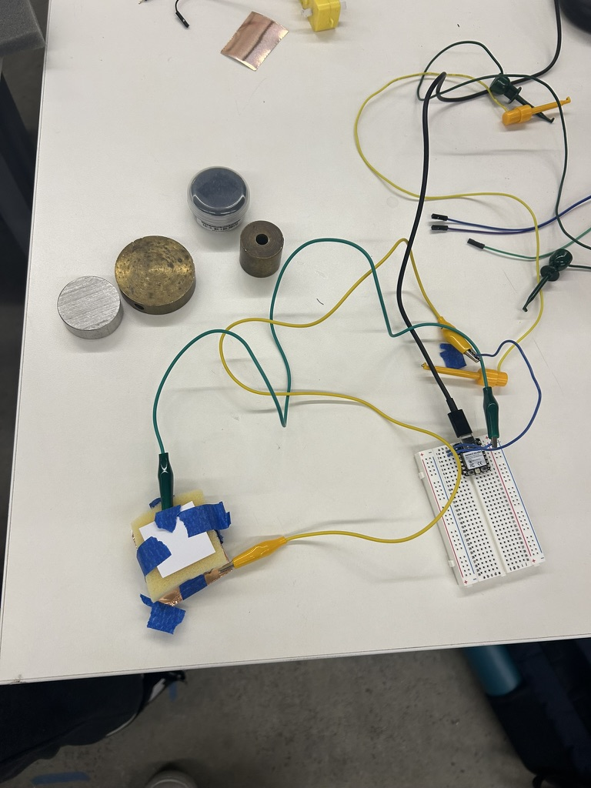
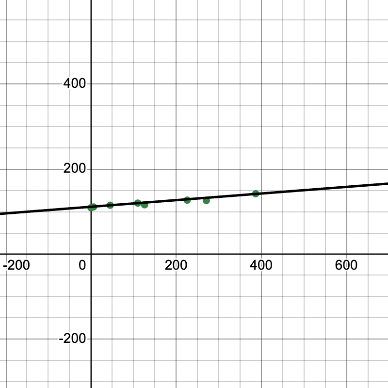
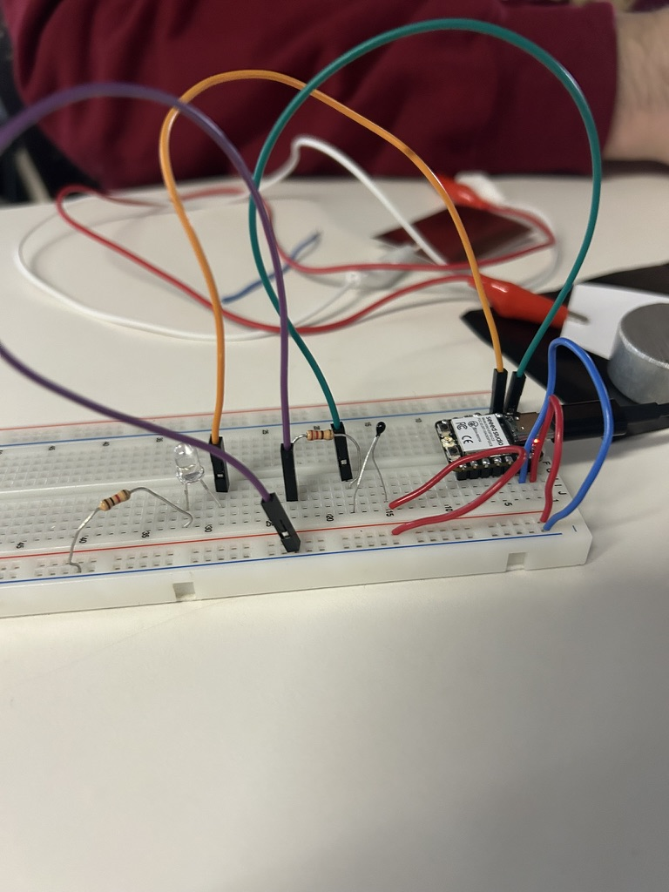
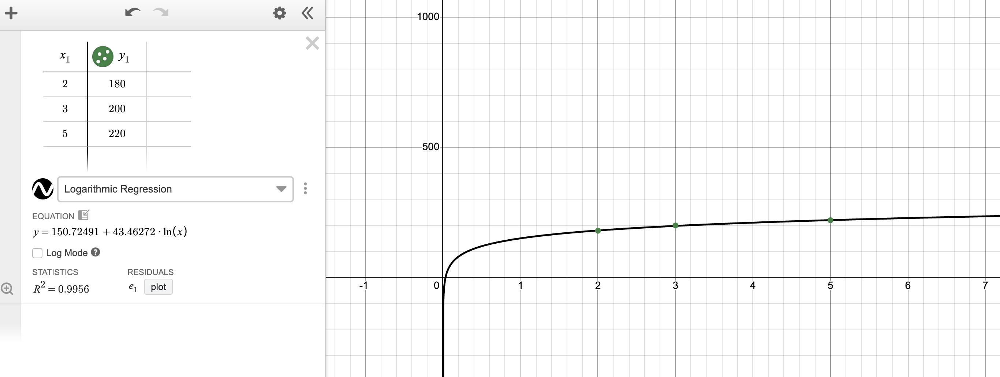
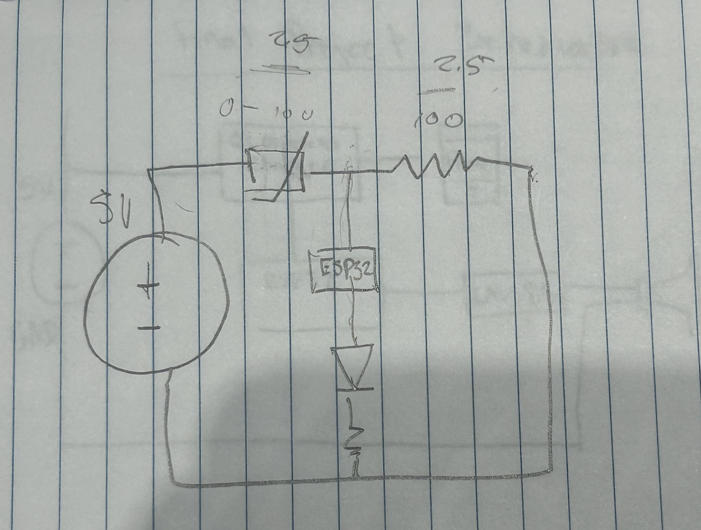
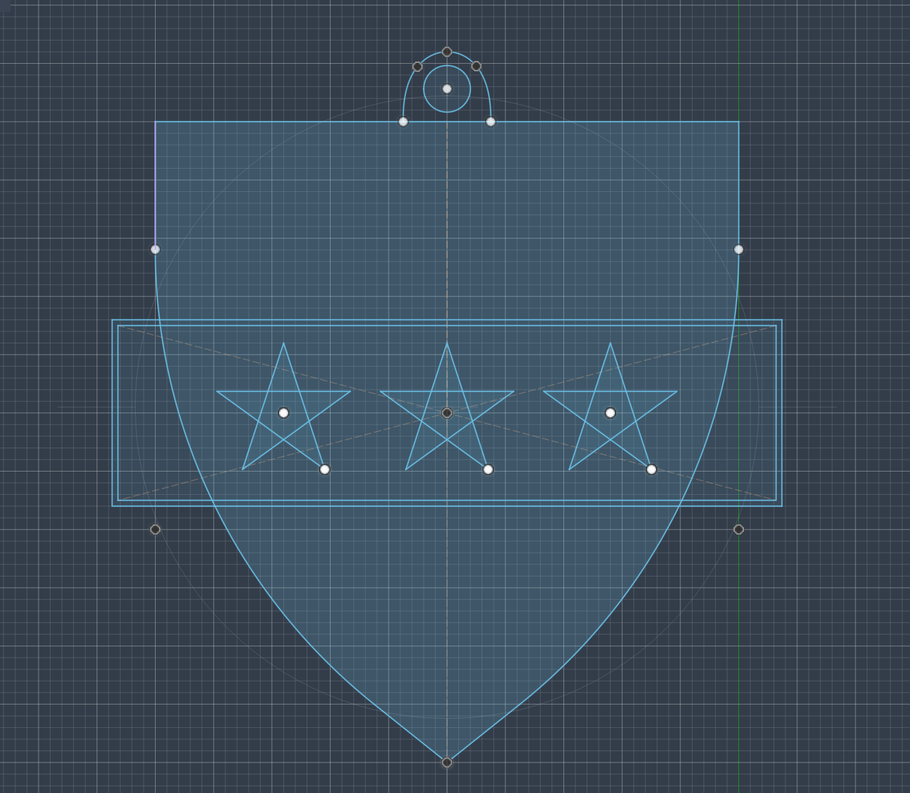

<div class="textcontainer">
<p class="margin"> </p>
<h3>Week 6: Electronic Input Devices</h3>
<p class="margin"> </p>
<h4>The Assignment</h4>
<p>This week was all about <b>SENSORS</b>! We needed to make a capacitive sensor and configure a second sensor (like temperature or sound) using C++ classes and non-blocking timing. Additionally, I needed to calibrate these sensors and prepare CAD files for the upcoming CNC week.</p>
<p class="margin"> </p>
<h4>Sensor 1: Capacitive Pressure Sensing</h4>
<p></p></img>
<p>For the capacitive sensor, we were split into teams during our lab and my group had the objective of measuring weight. We decided to use a piece of sponge sandwiched between two layers of copper tape and alligator clips. When weight is applied to the sponge, the distance between the copper plates decreases, changing the capacitance measured by the microcontroller.</p>
<h5>Calibration & Data</h5>
<p>To calibrate the sensor, we used a kitchen scale to measure different weights (the lab had these random cylindrical objects that were pretty hefty but contained, so we decided to use those!) and recorded the corresponding analog values. We found that the values were mostly linear, so we graphed it using a linear line.</p>
<p></p>
<p class="margin"> </p>
<h4>Sensor 2: Heat-Activated LED</h4>
<p></p></img>
<p>The second part of the assignment involved using an analog sensor with an output device. I built a heat-sensing interface using a thermistor. When I pinch the sensor, the LED lights up once a specific heat threshold is met.</p>
<p>I first had to calibrate the threshold to fit my body heat by getting the analog readings first of me pinching the sensor to see what number to use as a threshold. After that, I was able to set the threshold and test the functionality!</p>
<video controls autoplay loop muted style="height: 20vw;">
<source src="photos/heat_sensor_video.mp4" type="video/mp4">
Your browser does not support the video tag.
</video>
<p>In terms of graphing, I plotted the analog values of the heat sensor for various time periods. Given that my hand was a limited heat source, the thermistor warmed up and stayed a pretty consistent temperature. Thus, I graphed it as a logarithmic curve.</p>
<p></p>
<p class="margin"> </p>
<h4>Code Implementation</h4>
<pre><code class="language-arduino">
class HeatSensor {
int sensorPin;
int outputPin;
int threshold;
public:
// Constructor to initialize pins and threshold
HeatSensor(int input_pin, int output_pin, int heat_threshold) {
sensorPin = input_pin;
outputPin = output_pin;
threshold = heat_threshold;
pinMode(sensorPin, INPUT);
pinMode(outputPin, OUTPUT);
}
// Update function to be called in the main loop
void update() {
int currentHeat = analogRead(sensorPin);
if (currentHeat > threshold) {
digitalWrite(outputPin, HIGH);
} else {
digitalWrite(outputPin, LOW);
}
}
};
// Initialize the sensor on D1 with LED on D0 and threshold of 200
HeatSensor myHeatSensor(D1, D0, 200);
void setup() {
Serial.begin(9600);
}
void loop() {
myHeatSensor.update(); // Non-blocking update
}
</code></pre>
<p class="margin"> </p>
<h4>Circuit Schematics</h4>
<p>The capacitive sensor uses a high-value resistor (10M&Omega;) between the send and receive pins. The heat sensor uses a simple voltage divider circuit with a 10k&Omega; resistor to translate temperature changes into a readable voltage for the analog pin.</p>
<p></p>
<p class="margin"> </p>
<h4>CNC Prep: Design for Large Scale</h4>
<p>In preparation for CNC week, I designed a 2D DXF file in Fusion 360. I am planning to mill a little Kirkland keychain (BEST HOUSE!!).</p>
<p></p></img>
<p class="margin"> </p>
<h4>Reflections & Challenges</h4>
<p>I have such trouble with sensors and wiring, and I still feel like I want to work more with them and read up more to understand! So much left to learn and discover...</p>
</div>